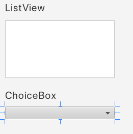
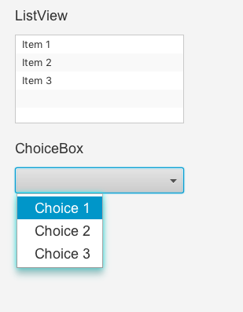
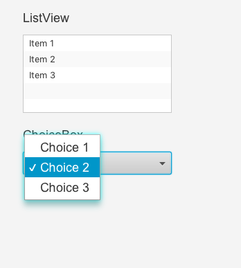

JavaFX ChoiceBox
El control ChoiceBox de JavaFX permite a los usuarios elegir una opción de una lista predefinida de opciones.
El control ChoiceBox de JavaFX está representado por la clase javafx.scene.control.ChoiceBox.
Creación de un ChoiceBox
Podemos crea un ChoiceBox simplemente creando una nueva instancia de la clase ChoiceBox.
ChoiceBox ChoiceBox = new ChoiceBox();En SceneBuilder arrastramos el control a nuestra escena. De nuevo nuestro entorno gráfico no nos permite añadir los items del control, deberemos utilizar los métodos correspondientes.
En el método initialize del controlador añadiremos las opciones al control y marcaremos la opción más probable como seleccionada, por ejemplo:
@Override
public void initialize(URL url, ResourceBundle rb) {
// TODO
choiceBox.getItems().add("Opción 1");
choiceBox.getItems().add("Opción 2");
choiceBox.getItems().add("Opción 3");
choiceBox.getSelectionModel().selectFirst();
}Añadir opciones a un ChoiceBox
Podemos añadir opciones a un ChoiceBox obteniendo su colección de elementos (getItems()) y añadiéndole los elementos (add()). Por ejemplo:
choiceBox.getItems().add("Opción 1");
choiceBox.getItems().add("Opción 2");
choiceBox.getItems().add("Opción 3");Añadir un ChoiceBox al gráfico de escena
Para hacer visible un ChoiceBox, se debe añadir al escenario gráfico. Esto significa que debe añadir ChoiceBox a un objeto de escena o a algún componente de diseño que luego se adjunta al objeto de escena.

Lectura del valor seleccionado
Podemos leer el valor seleccionado de un ChoiceBox a través de su método getValue(). Si no se selecciona ninguna opción, el método getValue() devuelve null. Por ejemplo:
String value = (String) choiceBox.getValue();Escuchando la selección
Es posible escuchar los cambios de selección en un ChoiceBox de JavaFX configurando un oyente de acción en el ChoiceBox a través de su método setOnAction().
No busques este método en Scene Builder, porque no aparece, lo tendremos que añadir antes o después de añadir sus elementos.
Por ejemplo:
int selectedIndex;
choiceBox01.getItems().add("Choice 1");
choiceBox01.getItems().add("Choice 2");
choiceBox01.getItems().add("Choice 3");
// marcamos el primero como seleccionado
choiceBox01.getSelectionModel().select(0);
choiceBox01.setOnAction((event) -> {
selectedIndex = choiceBox01.getSelectionModel().getSelectedIndex();
Object selectedItem = choiceBox01.getSelectionModel().getSelectedItem();
System.out.println("Selection made: [" + selectedIndex + "] " + selectedItem);
System.out.println(" ChoiceBox.getValue(): " + choiceBox01.getValue());
});
run:
Selection made: [1] Choice 2
ChoiceBox.getValue(): Choice 2
Selection made: [2] Choice 3
ChoiceBox.getValue(): Choice 3
BUILD SUCCESSFUL (total time: 11 seconds)